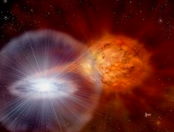

Research
Stars are the atoms of the universe. They play a crucial and prominent role on galactic and cosmological levels. Not only are they the visible probes, they also energize their host galaxies and the interstellar medium as their radiation heats the cooler gas in the clouds surrounding them. Beyond hydrogen and helium they create all the elements in the universe as by-products of the nuclear fusion that keeps them alive, particularly during their later evolutionary phases. They are the hosts and birthplace of planets which form in their circumstellar or protoplanetary discs at or near the end of the stars' own formation process.
I research the evolution of these enigmatic objects, their interactions with their nearby companions, and the nucleosynthesis processes taking place through their lifetimes. To do that, I use stellar evolution codes that model their structure and element formation. During my Ph.D. under the supervision of Prof. Mounib El Eid, I used the
HYADES code (HYdrodynAmical coDe for Evolving Stars), a well-tested 1D hydrodynamic stellar evolution code with
up-to-date input physics. At the Institute of Astronomy, I'm part of the Stars group and I use the Cambridge STARS code to study the evolution of single and binary stars.
You can see my ORCiD profile here  orcid.org/0000-0002-1333-5497
orcid.org/0000-0002-1333-5497
CNO ABUNDANCES IN RED GIANTS
When stars become red giants, they experience the first envelope mixing event that changes their surface abundances. Since stellar spectra tell us about the chemistry at the surface, we can then compare our model predictions to the observations.
 If we have a good understanding of the mixing process, we gain insight into the stellar interiors and chemistry by studying these abundance changes. Using state-of-the-art input physics, we find a discrepancy between predicted surface
oxygen abundances and observations in low mass red giants. The adjacent cartoon figure is a simple depiction of this finding, where the model predictions are shown as a red line and star symbols are observations. This suggests the need to invoke deeper mixing in the models than the theory predicts (shown as a dashed green line) to reproduce the observed abundance pattern. This is sometimes called extra
mixing and is parametrised as a diffusive process based on 2D hydrodynamic simulations.
If we have a good understanding of the mixing process, we gain insight into the stellar interiors and chemistry by studying these abundance changes. Using state-of-the-art input physics, we find a discrepancy between predicted surface
oxygen abundances and observations in low mass red giants. The adjacent cartoon figure is a simple depiction of this finding, where the model predictions are shown as a red line and star symbols are observations. This suggests the need to invoke deeper mixing in the models than the theory predicts (shown as a dashed green line) to reproduce the observed abundance pattern. This is sometimes called extra
mixing and is parametrised as a diffusive process based on 2D hydrodynamic simulations.
However, this raises important questions: how well do we understand mixing? And what physical mechanism drives this
extra mixing?
TWO-DIMENSIONAL STELLAR EVOLUTION
Such questions challenge one-dimensional (1D) stellar evolution theory. Although this theory has provided substantial understanding of the inner workings of stars, my research
shows that 1D models, with their imposed assumptions and simplifications like spherical symmetry, have difficulty in
modelling the transport of heat and chemical elements by convection in various parts of the star. It also highlights
shortcomings of ignoring important effects such as rotation.  Non-standard parameterised solutions like the one I mentioned previously inevitably fail to capture the
physical nature of the underlying processes responsible for certain observational anomalies. This ultimately tickles our curiosity
and drives our desire for a better understanding, hoping for the genuine satisfaction that accompanies such attainment.
Non-standard parameterised solutions like the one I mentioned previously inevitably fail to capture the
physical nature of the underlying processes responsible for certain observational anomalies. This ultimately tickles our curiosity
and drives our desire for a better understanding, hoping for the genuine satisfaction that accompanies such attainment.
A brave step in this direction is two-dimensional (2D) axisymmetric models that naturally include rotation.
This is being achieved through my work on developing 2DStars, a stellar evolution code to model rotating stars in 2D, together with Robert Izzard, Christopher Tout, Adam Jermyn
and Robert Cannon. This is work in progress.
We now have the first converging model of a fast rotating star shown on the left. The density color map (given in polytropic units here) exhibits a severe oblateness associated with
the deformation of equipotential surfaces due to the centrifugal distortion.
Being at the frontier of scientific exploration, this project promises a burst of new scientific insight as it exploits
existing possibilities for improvement given the advent of computational refinements and the unprecedented
developments in observational astronomy.
SYNTHESIS OF C-RICH DUST IN NOVAE OUTBURSTS
 Classical novae are very interesting objects since they are prolific dust producers. These are binary systems involving a star (not unlike our own Sun) and a white dwarf. Observations of a number of novae
have unambiguously revealed that their ejecta are rich in carbon. However, theoretical models of novae
outbursts to date have yielded outflows richer in oxygen than carbon. In a collaboration with Jordi José and Mounib El Eid,
we provided state-of-the-art novae models which produce carbon-rich ejecta, providing a novel explanation of
these observations.
(Image credit: David A. Hardy/www.astroart.org)
THE BLUE LOOP
 Stars of intermediate mass exhibit a phenomenon called the "blue loop", which characterizes the evolution
through the Cepheid instability strip. Since Cepheids are well-known variable stars that are largely observed
in the Galaxy, the blue loop presents a powerful phase that can constrain important physical processes. We investigated the striking
effect of a revised hydrogen-burning reaction rate on the blue loop and showed an impressive
suppression of the blue loops of intermediate mass stars. This is depicted in the adjacent figure which shows the evolutionary tracks of stars of various masses in the HR diagram. Black and blue symbols are observed cepheids (see paper for details). The suppression of the blue loop of the lower mass stars undesirably leaves many observed Cepheids unexplained. Having an experimentally established nuclear reaction rate allows focus to be brought to the
role of related physical processes that are not yet well-understood, like convection, in solving
this discrepancy.
Stars of intermediate mass exhibit a phenomenon called the "blue loop", which characterizes the evolution
through the Cepheid instability strip. Since Cepheids are well-known variable stars that are largely observed
in the Galaxy, the blue loop presents a powerful phase that can constrain important physical processes. We investigated the striking
effect of a revised hydrogen-burning reaction rate on the blue loop and showed an impressive
suppression of the blue loops of intermediate mass stars. This is depicted in the adjacent figure which shows the evolutionary tracks of stars of various masses in the HR diagram. Black and blue symbols are observed cepheids (see paper for details). The suppression of the blue loop of the lower mass stars undesirably leaves many observed Cepheids unexplained. Having an experimentally established nuclear reaction rate allows focus to be brought to the
role of related physical processes that are not yet well-understood, like convection, in solving
this discrepancy.